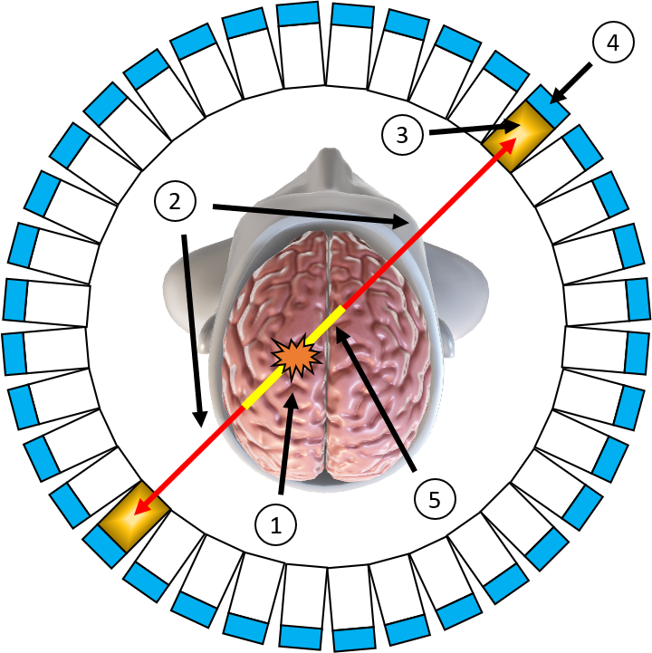
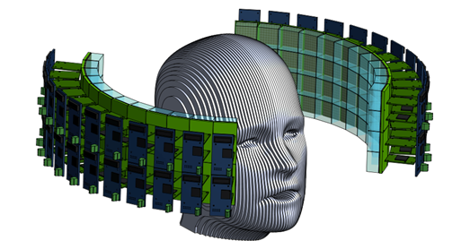
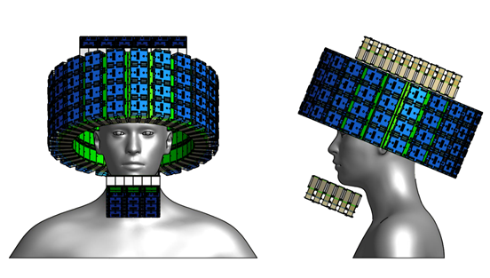

Medical Imaging and Detector R&D
Our group is involved in the research and development of novel medical imaging devices, particularly Positron Emission Tomography (PET) scanners. As a member of the TOF-PET for Proton Therapy (TPPT) collaboration, we are assisting in the construction of a prototype PET scanner for use in proton therapy at MD Anderson Cancer Center. Additionally, we are developing simulations and empirically testing various new PET scanner geometries that may provide significantly improved sensitivity relative to current clinical PET scanners.
About Positron Emission Tomography (PET)
Positron emission tomography (PET) is a powerful, noninvasive tool for molecular imaging of metabolic processes, used, e.g., for identifying tumors or brain disease. Fig. 1 illustrates how PET works; its labelled components are detailed below. The underlying principle of PET is the coincident detection of gamma rays (labelled ②) emitted in opposite directions from positron annihilation, which occurs at site ① after a tracer molecule injected into the bloodstream of a patient undergoes decay. A PET scanner itself consists of rings of scintillator crystals ③ coupled to photodetectors ④. The gamma rays interact in the crystals to produce showers of optical photons, and these photons trigger an electric signal when they strike the photodetectors. A coincidence event occurs when two photodetectors trigger at almost exactly the same time, indicating that an annihilation occurred along the line connecting the photodetectors. Modern scanners use time-of-flight (TOF) corrections to localize the annihilation site along this line. That is, if one photodetector triggers a time before the other, the annihilation site should be a distance closer to the first photodetector than the second, with the speed of light. However, there is variance in the difference between the time at which a gamma ray enters a crystal and the time at which this gamma ray causes a trigger, largely because this difference depends on the depth at which the gamma ray interacts in the crystal, called the DOI. Therefore, there is uncertainty in the position of the annihilation site. Within a certain degree of confidence, one can only restrict the annihilation site to a line segment ⑤.

Figure 1: Schematic diagram of a PET scanner.
TOF-PET for Proton Therapy (TPPT)
Our group is a member of the In-beam Time-of-Flight (TOF) Positron Emission Tomography (PET) for proton radiation therapy (TPPT) collaboration, which has been commissioned to design and construct a prototype PET scanner with high time resolution for use in proton therapy at MD Anderson Cancer Center. The proton therapy used in cancer therapy produces short-lived positron emitting radioisotopes, such as 15 O, 13 N and 11 C, which can be detected by a PET scanner. Such detection would allow for unprecedented proton beam accuracy and, therefore, safer and more effective cancer treatment. However, the geometric constraints of the proton beam itself require such a PET scanner to have only partial solid angle coverage. To make up for this partial coverage, the scanner must have excellent time resolution. Fig. 2 shows the design created for the TPPT collaboration to match these criteria, which we will assist in constructing. More information about the collaboration may be found here: https://utaustinportugal.org/projects/tppt/.

Figure 2: PET scanner design for the TPPT collaboration.
Conceptual Designs
In addition to contributing to the TPPT collaboration, our group is investigating innovative geometries and data collection techniques that could usher forth a new generation of high-sensitivity PET scanners. For example, Fig. 3 shows one PET scanner design that we have developed, which would allow for unprecedented solid-angle coverage and time resolution, thus yielding an overall sensitivity far surpassing current state-of-the-art scanners. This design (and others that we are studying) would employ the technique of double-ended scintillator crystal readout. With this technique, the depth of gamma interaction (DOI) can be estimated for every event, allowing for corrections to the measured trigger time and therefore vastly improved time resolution. This DOI estimation also allows for the minimization of parallax error, resulting in improved spatial resolution. We are currently investigating this technique and the overall design of Fig. 3 through simulation and benchtop studies, along with other conceptual designs. We hope to begin empirical tests at a larger scale in the near future.

Figure 3: Conceptual design for an ultra-high sensitivity PET scanner.


.png)